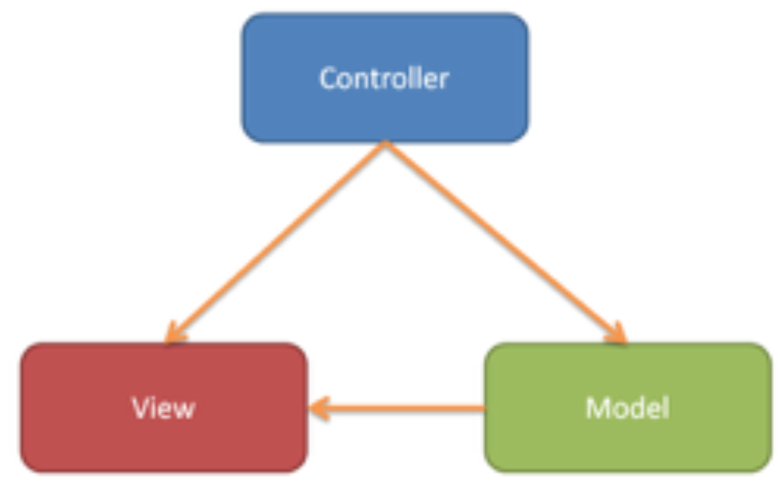

Documentation
Requirements Architecture DashBoard Design{kind=link}
Node.JS

Node.js is an interface to the V8 JavaScript runtime. It is mainly used for developing server-side web application. It is written mainly in JavaScript.
How do we plan to use Node.js
We are planning to use the MVC structure for our project. Models stand for the schema for the database, View stand for the frontend design and Controller stand for the backend design. Below show how the Model, Controller and View are connected.
So, our model would be the schema for the MySQL tables. Controller, would be contain mostly the backend code where we request for data from the MySQL. Finally, View , would be containing the html code on which makes up the frontend.
Why we decided to use Node.js
The member who is in charge of the backend has experience in using Node.js. Besides that, there are a lot of libraries on drawing graphs and processing tweets sentiment written in JavaScript.
Twitter API
What is Twitter API
This an the official API developed by Twitter.Inc. It allow developer to extract tweets from Twitter Database. However, it will only enable user to extract real time tweets. In other word, user can only extract tweets that are being tweeted.
How to use.
We will connect Twitter API to node.js to retrieve the tweets. We will take user inputs and concatenate them into a query to be send through Twitter API. Tweets retrieved will then be stored in our MySQL database.
Why we decided to use this API
It's free to use. In fact, it is the only publicly available API that allow developers to extract tweets from Twitter Database. This API have also written in multiple programming language which one of them is javascript (the language that makes up Node.js).
https://dev.twitter.com/rest/publicAlchemyAPI
What is AlchemyAPI
AlchemyAPI is a REST API that uses natural language processing technology and machine learning algorithms to extract semantic meta-data from content, such as information on people, places, companies, topics, facts, relationships, authors, and languages. The feature that we are going to use is the sentiment processing. Given a text, AlchemyAPI would return the sentiment of the text. It could be positive, neutral or negative.
How to use
First, we would request for tweets from Twitter API. Then, we would send a request to the AlchemyAPI for each tweets extracted. We would then insert the result into a table ( this table would be reseted).
Why use ?
It’s is relatively accurate compared to other APIs. Due to it being host on a fast server, the response is also fast.
Comparison Historical Tweets and Realtime Tweets
PROS
More more efficient (easier to collect a large amount of data as the data is already there compared to real time where you have to wait a certain period of time to sufficient collect data and so its less time consuming). More consistent (usually product cycle demands reports are in daily, weekly, monthly or annually and its not possible with real time). Extract more data than realtime data in the same amount of time.
CONS
Softwares that allow you to extract tweets are usually realtime (this will reduce the number of available software to use) [as long as we are able to find a good software that provides historic then we can use it]. We have to pay to get the historical tweets.
REALTIME DATA
PROS
Tweets are more up to date. Extracting realtime tweets is free.
CONS
Takes more time to get the tweets (this may be negligible depending on the circumstances). The speed depends on the popularity of the products (for more famous products the data will be more as more tweets will be created per second).
In term of relevancy, we would choose historial tweets but since historical tweets is not free. We decided to emulate historical tweets by having a machine running 24 hours extracting realtime tweets which would be store inside a mysql. We will extracting the tweets for 2 weeks. Our project would be requesting tweets from our database whenever we need rather than extracting using Twitter API directly.
CORRELATION
Correlation is a statistical technique. Correlation describes the degree of association between two variables. In our project the two variables are:Demand for product x (in units) – loaded from a file, Social media sentiment (Tweets with a positive sentiment) and the extent to which the two factors are correlated is expressed as a coefficient. Of the two variables, one is a dependent variable (Sentiment) the other is independent (Demand).
HOW WE WILL ESTABLISH THE CORRELATION
We will be ploting a graph of demand vs sentiment. Then, we will check the gradients of each consetcutive tuple points. If the gradient is positive, then add 1 to a acummulator else do nothing. Then we divide the accummulator over the number of graident checked.
Plotting Graph.
We will be using two different libariries for plotting graphs.
Chart.js
PROS
● Easy to create use. Only need to include a json object containing all the properties of the graph as a argument.
● Support animation without needing to add additional css.
CONS
● For linegraph and barchat, users can only use numerical data on the y - axis. In other word, the x - axis work only as labels. So, the distance between each consitueve points in x - axis is the same regardless of it’s value.
● Cannot place the legend on the y-axis and x-axis.
D3.js
PROS
● Both x-axis and y-axis can represent numerical data.
● Can place legend on both axes.
CONS
● Difficult to set up. Different type of graph requires different setups.
After dicussing, we decided to use both Chart.js and D3.js. We will use Chart.js for all the graph except the correlation graph which would use D3.js.